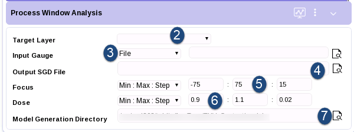
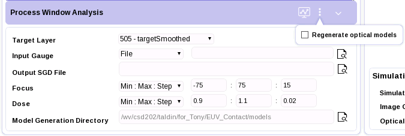
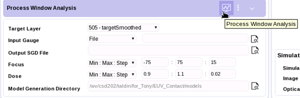
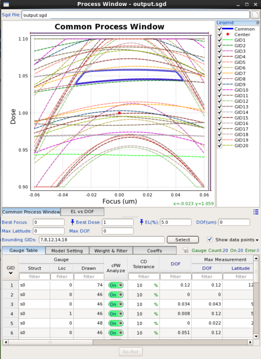

The Process Window Analysis (PWA) operation
is new for Calibre RFT v2.0. You can use it to generate a super
gauge data (.sgd) file of the simulated gauges.
You can view these in the PW Plot tool without using a litho setup
file.
Restrictions and Limitations
Prerequisites
A layout
open in Calibre WORKbench, zoomed in to the area of interest for
the PWA operation.
An open Calibre
RFT v2.0 LM simulation session.
Gauge data,
either drawn on a layer in Calibre WORKbench or as a gauge file.
The gauge file should be .gg format.
A previously
configured model in the Process Management area, as described in “Configuring the LM Process Management Section”.
Procedure
- In the
Process Management area, set the Design Layer to the layer to be
simulated (typically, this is the post-OPC layer).
- In the
Process Window Analysis panel, click to the right of Target Layer
and select the target from the list of available layers (typically,
this is the original drawn layer with the target CDs on it).
Note: The simulation and target layer
cannot be the same layer.
Figure 1. Process
Window Analysis Configuration
- Select
your input gauges by loading either a previously created gauge file
(File selection) or gauges on a layer in
the layout (Layer selection).
- Set the
Output SGD File by entering a name for the SGD file or using the
file navigator.
- Configure
the Min, Max, and Step Focus values for the simulation.
- Configure
the Min, Max, and Step Dose values for the simulation.
- Specify
the litho model directory the PWA operation uses.
The default directory is the current litho model directory.
If you choose the default, any required missing optical model (focus)
will be generated automatically in the litho model directory.
Note: The PWA operation generates new optical models
for focus values that were not already present in the litho model
directory. The PWA operation does not overwrite the optical models
in the original litho model directory.
To change the directory to safeguard the original litho model
directory, choose one of the following options:
In the
Model Generation Directory field, type the name of another directory
or browse to an existing directory.
Click the PWA
options button and uncheck the
Regenerate optical models box.

By default, if an optical model for a focus condition exists,
it will not be regenerated. Use this option to force regeneration.
- Click the
indicated button in Figure 2 to
run the PWA operation.
Figure 2. Start
Process Window Analysis
You can view simulation progress in the Linux terminal from which
Calibre WORKbench was invoked.
Results
After completing the PWA operation successfully, a super gauge
data file is generated, and the PW Plots window opens with process
window information contained in the output .sgd file.
Figure 3. Process
Window Plot